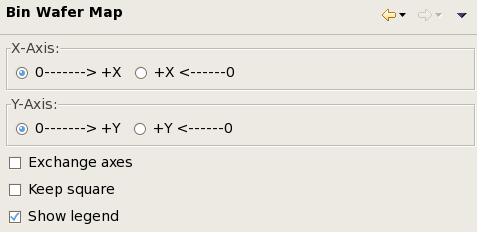

Bin Wafer Map preference settings
The Bin Wafer Map preference page lets you set display options for bin wafer map graphs.

These settings are available:
- X Axis: Whether the x-coordinates of the dies increase from
left to right or from right to left:
- 0-------> +x: Dies with higher x-coordinates are located at the right.
- +x <-------0: Dies with higher x-coordinates are located at the left.
- Y Axis: Whether the y-coordinates of the dies increase from
bottom to top or from top to bottom:
- 0-------> +y: Dies with higher y-coordinates are located at the top.
- +y <-------0: Dies with higher y-coordinates are located at the bottom.
- Exchange Axes
- If this option is checked, the x-axis is the vertical axis and the y-axis is the horizontal axis.
- If the options is unchecked, the x-axis is the horizontal axis and the y-axis is the vertical axis.
- Keep Square: If this option is checked, the wafer map is always square, regardless of the dimensions of its view. If it is unchecked, the wafer map is as wide and tall as the view allows.
- Show legend: If this option is checked, a legend is displayed beside the chart.
Functional changes
- Introduced in SmarTest 7.2.0